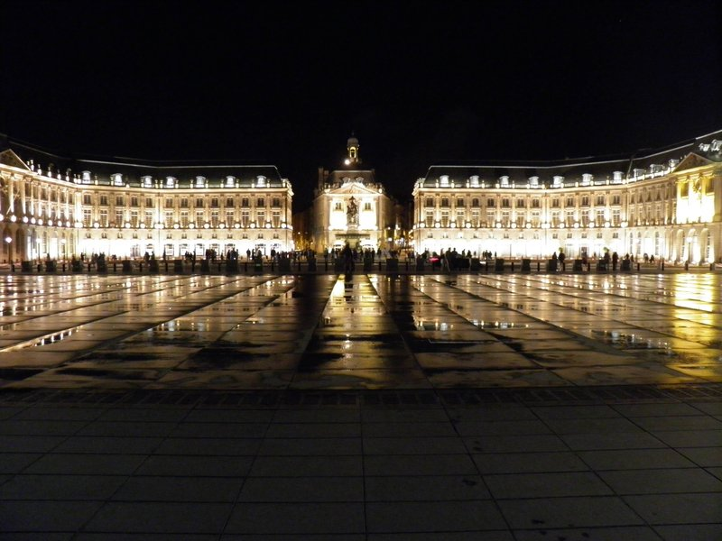
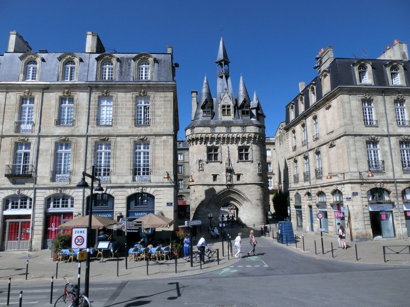
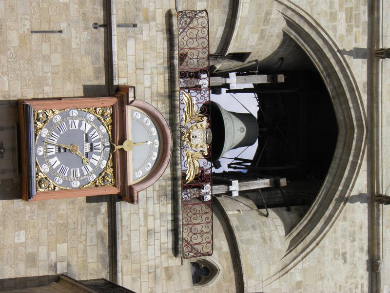
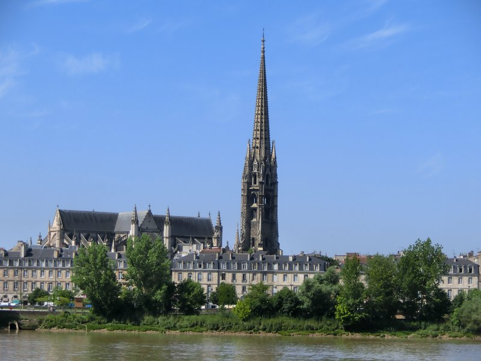
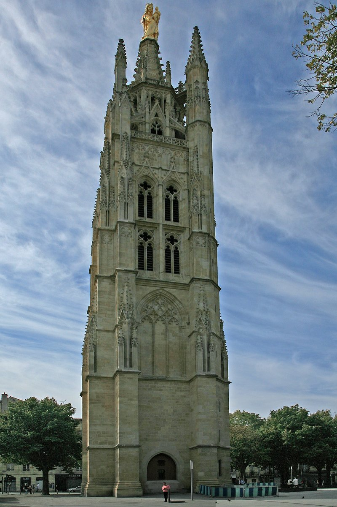
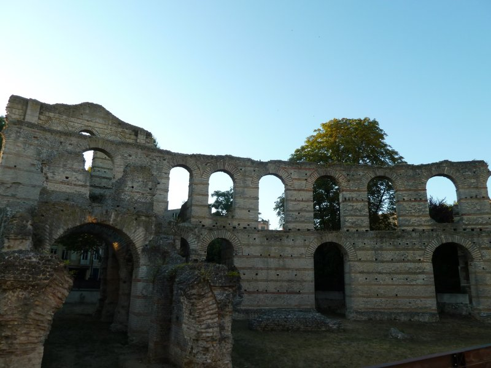

TRIP OVERVIEW
Day 1 – Place de la Bourse · Porte Cailhau · Grosse Cloche · Basilique Saint-Michel
Day 2 – Pey-Berland Tower · Palais Gallien · Cité du Vin
Day 1
🏨 From Hotel: 🚶 8 min · 🚕 3 min → Place de la Bourse
1.
Place de la Bourse
↳ Three 18th-century limestone palaces designed by Gabriel for Louis XV, forming Bordeaux's grandest waterfront ensemble and a UNESCO World Heritage site. The Miroir d'Eau in front — 3,450 m² of shallow water — mirrors the baroque facades perfectly.
🏛️ Open 24/7
⏰ ~45 min
⚠️ Miroir d'Eau operates April–October, 10:00am - 10:00pm only.

🚶 5 min · 🚕 2 min → Porte Cailhau
2.
Porte Cailhau
↳ A 35-metre triumphal arch built in 1495 to honour Charles VIII's victory at Fornovo. Climb four medieval floors through Gothic tracery and corbelled battlements to a rooftop terrace overlooking the Garonne. Capacity is 19 visitors; narrow spiral stairs are part of the experience.
🏛️ Daily 10:00am - 1:00pm · 2:00pm - 6:00pm
⏰ ~45 min
⚠️ November–March: closed Monday and Tuesday; open Wednesday–Sunday.

🚶 8 min · 🚕 3 min → Grosse Cloche
3.
Grosse Cloche
↳ One of France's oldest and best-preserved medieval belfries, built as the city's main gateway in the 15th century. Its 7,800 kg bourdon bell still rings five times a year. Twin round turrets flank the arch — the last remnant of the city's fortified wall on this side of the old town.

🚶 10 min · 🚕 4 min → Basilique Saint-Michel
4.
Basilique Saint-Michel
↳ Bordeaux's largest Gothic church, built 1350–1532, with a 114-metre detached stone spire — the third tallest in France. The spire stands separately because the marshy ground could not support its weight beside the nave. The church anchors the lively Saint-Michel quarter.
🏛️ Daily 9:00am - 6:30pm
⏰ ~45 min
⚠️ Detached spire open July–September only. Outside that window, spire is viewable from the square only.

🚶 15 min · 🚕 5 min → hotel
Day 2
🏨 From Hotel: 🚶 12 min · 🚕 4 min → Pey-Berland Tower
1.
Pey-Berland Tower
↳ The 15th-century detached bell tower of Saint-André cathedral, built separately to spare it from its bells' vibrations. Timed-entry tickets required. The 229-step climb reaches a rooftop terrace at 50 metres — the best panoramic view in Bordeaux, sweeping across the limestone rooftops and the Garonne.
🏛️ Daily 10:00am - 1:00pm · 2:00pm - 6:00pm
⏰ ~1 hr
⚠️ Closed January 1, May 1 and December 25. Book timed-entry tickets in advance online.

🚶 12 min · 🚕 4 min → Palais Gallien
2.
Palais Gallien
↳ The only surviving Roman monument in Bordeaux — a 2nd-century amphitheater that held 15,000 spectators when the city was the Roman Burdigala. Its dramatic limestone arches rise from the urban fabric, the oldest standing structure in the city. Open June–September only; exterior visible year-round.
🏛️ Daily 1:00pm - 6:00pm
⏰ ~30 min
⚠️ Open June–September only. October–May: exterior visible from street at no charge.

🚕 8 min → Cité du Vin
3.
Cité du Vin
↳ The world's only museum dedicated to the universal culture of wine, housed in an XTU-designed golden tower on the Garonne. Ten permanent galleries trace wine's 8,000-year history from ancient Mesopotamia to the present. The 8th-floor Belvédère ends the visit with a glass of regional wine and a panoramic view.
🏛️ Daily 10:00am - 7:00pm
⏰ ~2 hrs 30 min
⚠️ November–April: closes 6:00pm. Check seasonal dates before visiting.

🚕 10 min → hotel
🗓️ Weekly Closures
No notable city-wide weekly closures in Bordeaux.
📅 Tours
Viator
↳ Three-hour walk through the UNESCO old town stopping at the city's best independent bakeries — tasting canelés, croissants, and regional specialties while learning the history of the medieval streets.
🕐 9:30am · ⏳ 180 min · 👥 Group
🚶 9 min · 🚕 3 min
↳ Two-hour tip-based walking tour covering the UNESCO historic centre — main squares, waterfront, medieval gates, and the stories behind the Port of the Moon. Good orientation before exploring independently.
🕐 10:00am · ⏳ 120 min · 👥 Group
🚶 9 min · 🚕 3 min
↳ Evening walk through the illuminated UNESCO historic centre — Place de la Bourse, the Grand Théâtre, and the river quays lit by 1,400 floodlights. The city's famous light-up is best experienced on foot.
🕐 9:00pm · ⏳ 90 min · 👥 Group
🚶 8 min · 🚕 3 min
☕ Cappuccino
KURO Espresso Bar · 4.5⭐ · 130+ reviews
🏛️ Monday - Friday 9:00am - 3:00pm
🚫 Closed Saturday & Sunday
🚶 3 min · 🚕 2 min
🫕 Restaurants Near Hotel
Le Parlement by ALEX · 4.5⭐ · 500+ reviews
↳ Classic brasserie on Place du Parlement — terrasse seating, regional menu.
🏛️ Daily 12:00pm - 2:30pm · 7:00pm - 10:30pm
🚶 2 min · 🚕 2 min
Le Bouchon Bordelais · 4.5⭐ · 300+ reviews
↳ Traditional bistro — entrecôte bordelaise, duck confit, strong wine list.
🏛️ Tuesday - Saturday 12:00pm - 2:00pm · 7:30pm - 10:00pm
🚫 Closed Sunday & Monday
🚶 3 min · 🚕 2 min
Les Drôles · 4.5⭐ · 400+ reviews
↳ Relaxed bistro near Place de la Bourse — duck breast, seasonal specials.
🏛️ Daily 12:00pm - 2:30pm · 7:00pm - 10:30pm
🚶 8 min · 🚕 3 min
🍽️ Downtown Restaurants
La Tanière · 4.5⭐ · 600+ reviews
↳ Riverside bistro near Porte Cailhau — precise meat dishes, sharp wine list.
🏛️ Tuesday - Saturday 12:00pm - 2:30pm · 7:30pm - 10:00pm
🚫 Closed Sunday & Monday
Mazal · 4.5⭐ · 400+ reviews
↳ Levantine and Mediterranean sharing plates in a convivial city-centre room.
🏛️ Tuesday - Saturday 12:00pm - 2:30pm · 7:00pm - 10:30pm
🚫 Closed Sunday & Monday
La Tupina · 4.5⭐ · 2800+ reviews
↳ The definitive Bordelais table — entrecôte, duck, lamproie; open fire cooking.
🏛️ Daily 12:00pm - 2:30pm · 7:00pm - 11:00pm
🍮 Local Tastes
Canelé de Bordeaux
↳ Small caramelised rum-and-vanilla custard cylinder — crispy dark shell, soft interior. Bordeaux's most iconic pastry, with a protected designation since 1985.
Entrecôte à la Bordelaise
↳ Rib-eye steak in a silky reduction of Bordeaux wine, shallots, and bone marrow — the sauce is made from the same wine poured in the glass.
Oysters from Arcachon
↳ Fresh Atlantic oysters from the Bay of Arcachon — fleshy, sweet, eaten raw with lemon or shallot vinegar. On virtually every bistro menu in the city.
Lamproie à la Bordelaise
↳ Lamprey from the Gironde estuary simmered in Bordeaux wine with leeks — seasonal December to May only. The city's most distinctive traditional dish.
🎭 Shows, Performances & Concerts
Opéra National de Bordeaux — Grand Théâtre
↳ One of Europe's finest 18th-century opera houses, designed by Victor Louis in 1780 — Ionic colonnade, celebrated ceiling fresco, 250+ performances per season.
🚶 9 min · 🚕 3 min
Auditorium de Bordeaux
↳ 1,440-seat concert hall opened in 2013 — home to the Bordeaux Aquitaine Orchestra, with the largest orchestra pit in Europe.
🚶 15 min · 🚕 5 min
🚌 Getting Around
🚕 Ride Apps
🚎 Tram
↳ TBM tram serves the city centre and connects the hotel district to Cité du Vin on Line B.
Bordeaux has a tram system — operated by TBM · Transports Bordeaux Métropole. Lines used on this trip: B.
🚆 Train Stations Near Hotel
🚄 Gare de Bordeaux-Saint-Jean
TGV to Paris Montparnasse in 2 hr 10 min. TER to Arcachon, Saint-Émilion, La Rochelle, and Toulouse.
🚶 35 min · 🚕 10 min
⛲️ Day Trips by Train
Libourne · 25 min
↳ Market town at the confluence of the Dordogne and Isle rivers, gateway to Pomerol and Saint-Émilion wine country — the Saturday market around the medieval town hall is one of the best in the Gironde, and the riverside quays are unhurried by the day-tripper crowds.
🎫 book at: sncf-connect or Omio
Saint-Émilion · 35 min by TER
↳ UNESCO wine village on a limestone hill — Romanesque churches, underground catacombs hewn into the hillside, and Grand Cru châteaux on every ridge. The monolithic church is the largest underground church in Europe.
🎫 book at: sncf-connect.com or Omio
Arcachon · 45 min by TER
↳ Atlantic beach town on a sheltered bay — Arcachon oysters at the port, swimming, and the Dune du Pilat, the tallest sand dune in Europe at 104 metres.
🎫 book at: sncf-connect.com or Omio
Périgueux · 1 hr 15 min
↳ Capital of the Dordogne, with a spectacular Byzantine-Romanesque cathedral of five domes visible across the river and a medieval core dense with Renaissance mansions — the city is also the closest urban base to the prehistoric cave paintings of the Vézère valley.
🎫 book at: sncf-connect or Omio
La Rochelle · 1 hr 45 min by TGV
↳ Best-preserved medieval port in France — UNESCO-listed harbour guarded by three medieval towers, a car-free historic centre, and white limestone arcaded streets.
🎫 book at: sncf-connect.com or Omio
⭐ Michelin Restaurants
⭐⭐ L'Observatoire du Gabriel
↳ Modern French gastronomic cuisine on Place de la Bourse.
🚶 8 min · 🚕 3 min
⭐⭐ Le Pressoir d'Argent
↳ Gordon Ramsay's flagship French two-star at the InterContinental.
🚶 9 min · 🚕 3 min
⭐ Soléna
↳ Inventive seasonal cuisine by Chef Victor Ostronzec; dinner only.
🚶 10 min · 🚕 4 min
⭐ L'Oiseau Bleu